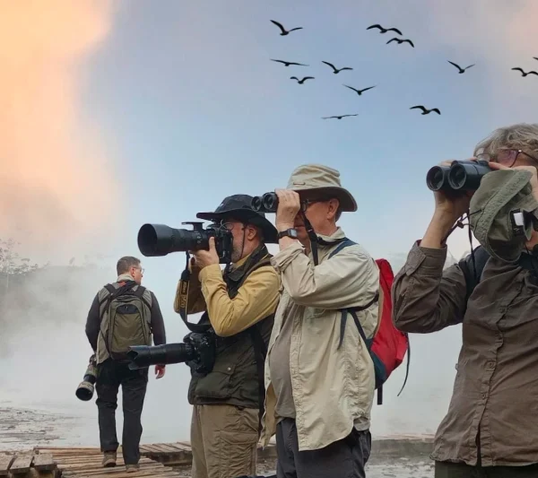
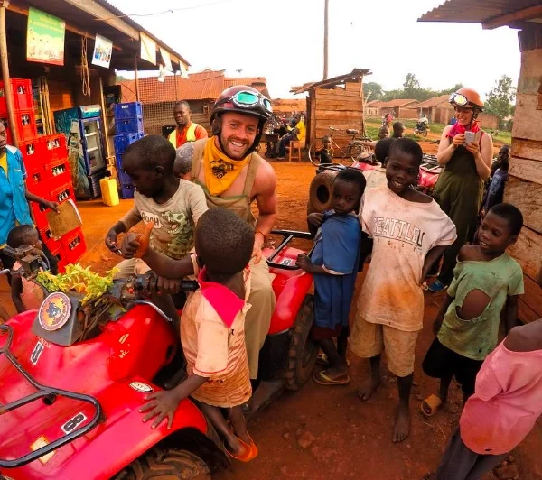
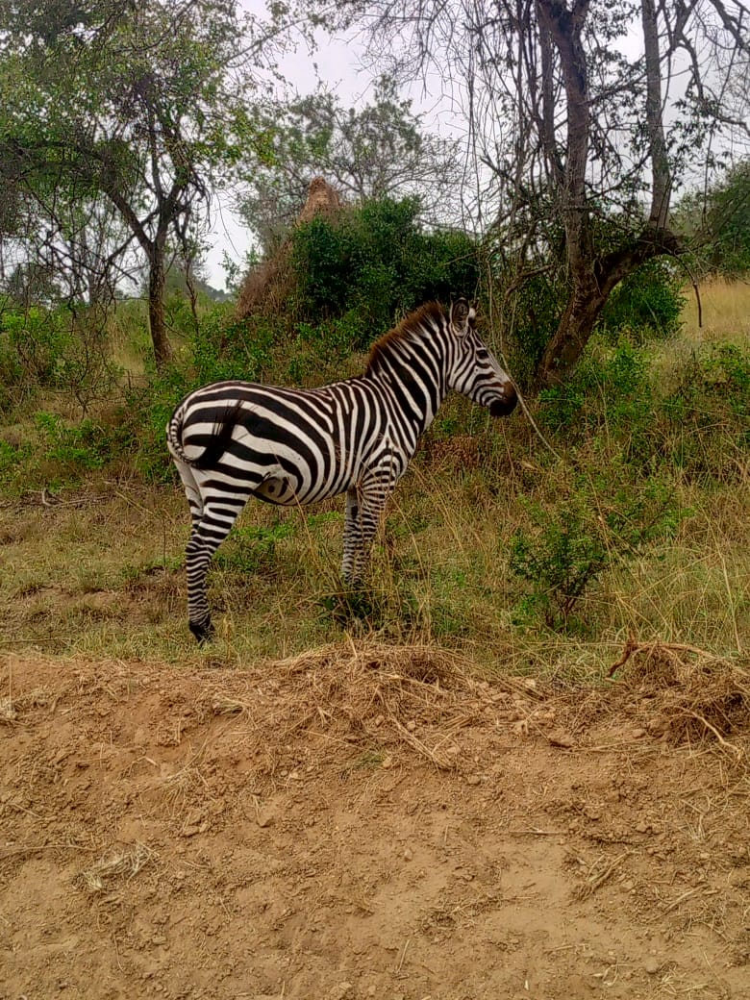

Gorilla Trekking
Bwindi, Mgahinga, permits, lodges, and transport support.
Destinations & Experiences
Explore primate forests, classic savannah parks, mountain trails, rhino tracking, and cross-border Rwanda journeys.
Things to Do
Bwindi, Mgahinga, permits, lodges, and transport support.

Kibale and primate routes that combine well with western Uganda safaris.

Murchison Falls, Queen Elizabeth, Lake Mburo, and Kidepo itineraries.

Shoebill, forest birds, lake routes, and quiet nature walks.

Kazinga Channel, Nile cruises, and scenic lake add-ons.

City, village, heritage, food, craft, and guided community experiences.
Destination Ideas
Expanded Destination Guide
Every activity is planned around current park rules, permit availability, season, travel time, and the pace of your group.
Start early with UWA guides and follow a semi-habituated chimpanzee community through the forest. Current guidance allows up to four hours of viewing after the chimpanzees are located. Advance permits are essential, and the experience pairs naturally with Bigodi, crater lakes, Queen Elizabeth, or a longer western Uganda circuit.
Plan Kibale
Combine Nile boat experiences and game drives with serious bird watching, permitted sport fishing, and an authorized night game drive. A Budongo Forest chimpanzee experience can also be built into the wider Murchison circuit. Fishing and night activities remain subject to UWA rules and availability.
Plan Murchison
Take a Kazinga Channel boat ride for hippos, waterbirds, and shoreline wildlife, descend into forested Kyambura Gorge for chimpanzee tracking, then add Kasenyi game drives or the tree-climbing lions of Ishasha.
Plan Queen Elizabeth
Uganda’s compact savannah park is ideal for zebra, impala, eland, acacia birdlife, boat safaris, guided walks, game drives, and—when arranged with a ranger—night drives. It works especially well as a short escape or a stop between Kampala and south-western Uganda.
Plan Lake Mburo
Choose from scenic foothill walks, multi-day treks, or a technical summit expedition. Augur can coordinate transport, guides, accommodation, and the wider western Uganda route.
Plan Rwenzori Photo: Itote Rubombora / Unsplash
Explore forest and mountain trails, waterfalls, caves, viewpoints, birdlife, and coffee experiences around Sipi. Routes can range from a relaxed day walk to a multi-day Mount Elgon trek.
Plan Mount Elgon
Join a guided on-foot rhino tracking experience and learn how Ziwa helped rebuild Uganda’s rhino population. With rhinos now also returning to Ajai and Kidepo, Ziwa remains an important conservation and visitor experience on the road to Murchison Falls.
Plan Ziwa
Use Augur’s Rwanda service route to connect Kigali, Volcanoes National Park, Akagera’s Big Five and Lake Ihema boat trips, Nyungwe primates, and relaxing Lake Kivu stays. Private transport and Uganda–Rwanda combinations can be planned as one itinerary.
Explore Rwanda toursPark rules, permits, activity times, and availability can change. Augur confirms the latest requirements with the relevant wildlife authority before final booking.
Travel Styles
Bwindi, Mgahinga, Kibale, permits, lodges, guides, and transport.
Compare tripsMurchison Falls, Queen Elizabeth, Lake Mburo, Nile, and Kazinga cruises.
Open wild tours
Airport pickups, staff movement, conference vehicles, and scheduled hires.
Request fleet
Jinja, Mabamba, Lake Mburo, city tours, transfers, and weekend-friendly plans.
See options